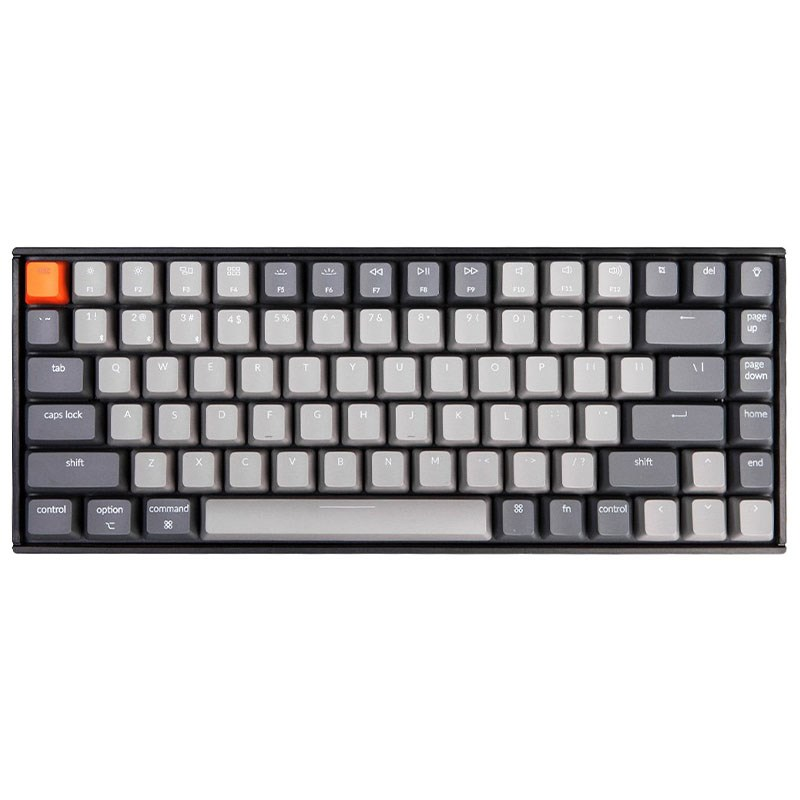

Keychron K2-B3
Cena:

Rodzaj przełączników:
Mechaniczne - Gateron G Brown Pro
Typ:
Dla graczy
TKL (tenkeyless)
Łączność:
Przewodowa
Bezprzewodowa
Interfejs:
USB
Bluetooth
Klawisze numeryczne:
Nie
Klawisze multimedialne / funkcyjne:
Tak
Podświetlenie klawiszy:
Tak
Kolor podświetlenia klawiszy:
Wielokolorowe - RGB
Rodzaj podświetlenia:
Punktowe - każdy klawisz w innym kolorze
Strefowe - każda strefa w innym kolorze
Jednostrefowe - wszystkie klawisze w tym samym kolorze
Złącza:
USB-C - 1 szt.
Czas pracy na baterii:
Do 240 godzin
Do 72 godzin w trybie podświetlania
Obsługiwane systemy:
Windows
Mac OS X
Obudowa:
Standardowa
Dodatkowe informacje:
Regulowane stopki
Stopki antypoślizgowe
Wytrzymałość 50 mln kliknięć
Częstotliwość odświeżania: 1000hz
Obsługa wielohostowa: możliwość podłączenia nawet 3 urządzeń
Dołączone akcesoria:
Narzędzie do zdejmowania nakładek klawiszy
Kabel USB-A -> USB-C
Długość:
313 mm
Szerokość:
123 mm
Wysokość:
40 mm
Waga:
663 g
Gwarancja:
12 miesięcy (gwarancja producenta)